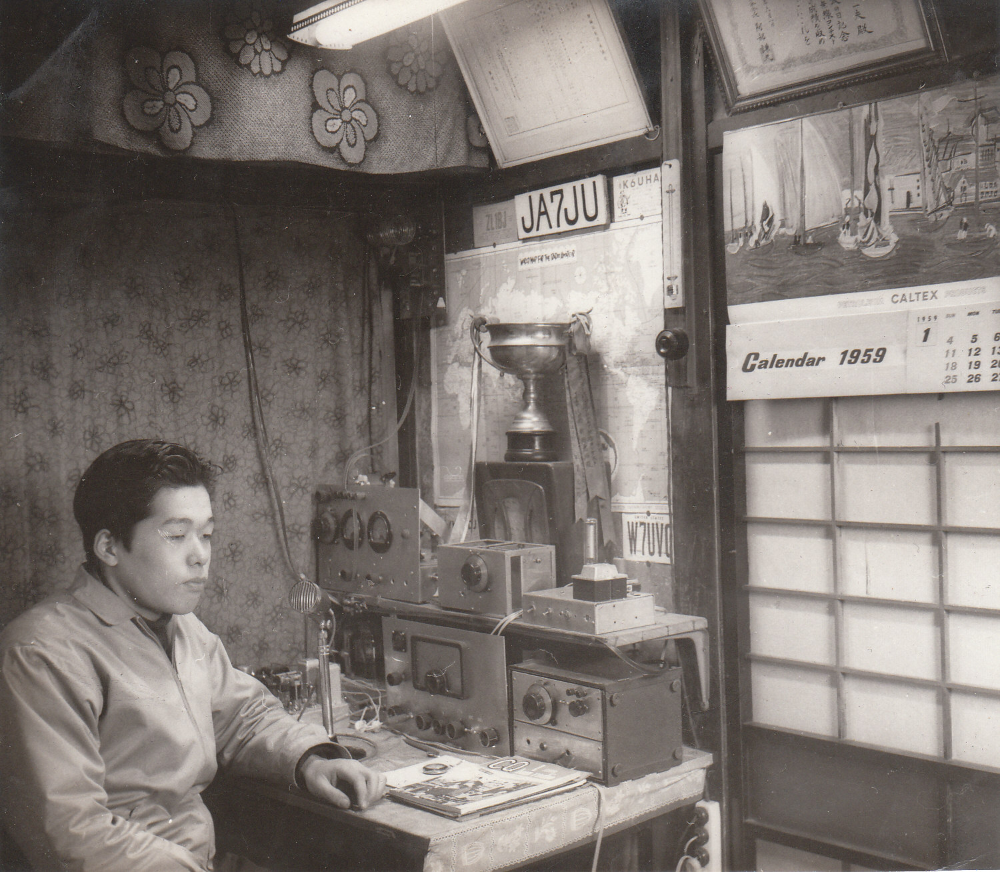
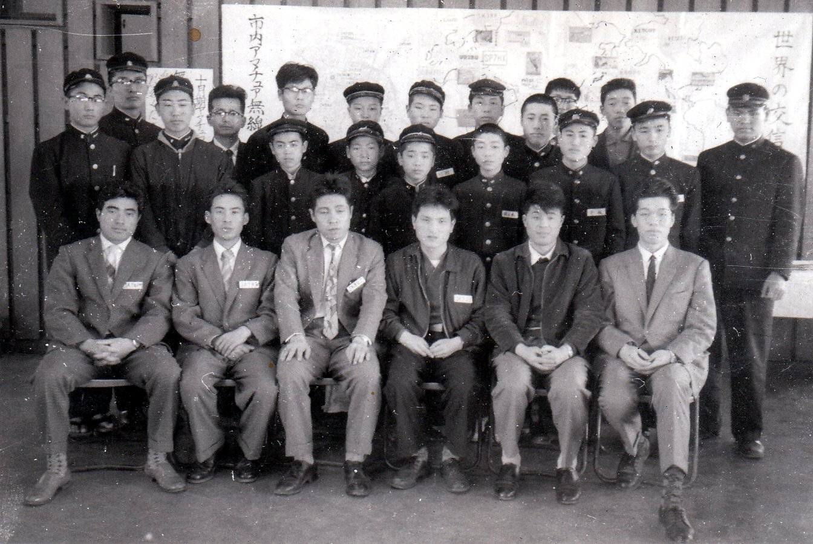
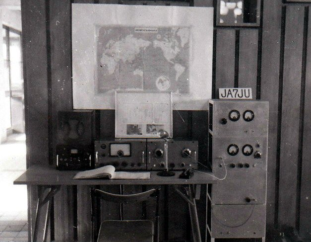

1959年の6m入感状況
[DX Report Jan-Dec.1959]
TIME:JST(UTC+0900)
Report from JA7JU (QN00)
◎1959年(昭和34年)はサイクル19もそろそろ下降線をたどる。
この年の50MCに大きく影響を与えたのはアマチュア無線従事者のクラスと操作範囲の変更だった。
1958年(昭和33年11月)に変更されたアマチュア無線従事者のクラスは、従来の1アマ、2アマの2本立から、
1アマ、2アマ、電信、電話級(モールスの試験がないクラス)の4クラスとなった。この変更で、従来の2アマ
は電信の"追試験(45/分)"を受ける事により7MHz以下、28MHz帯以上のオールモードで100Wが操作範囲となっ
た(但し10Wを超える局には落成検査が必要)。海外DXとのQSOを目指して50MC帯にQRVしていた2アマ局はこぞ
って新2アマに移行した。
1959年はサイクル19のコンデションの降下と相まって、多くの局が50MC帯よりDXの入感の頻度の高い28MC帯
に移ってしまったため50MCバンドのアクティビティーは急激に低下してしまった。
尚、昭和43年までにモールスの試験を受けない"旧2アマ"の資格保持者は、これ以降は電話級(現在の4アマ)
の資格となった。

01-06.Jan.1959
◎国内外のDXとのQSOは無し。
07.Jan.1959
◎10:30JST頃から国内EsでJA5.6が入感。
08-31.Jan.1959
◎国内外のDXとのQSOは無し。
14.Feb.1959
◎午後からVKが入感。
◎入感していた局：VK6ZBE.VK6ZAV。
VK6ZBZ 15:00 50.- AM QSO (6m QSO#411)
15.Mar.1959
◎VKが入感。
◎入感していた局：VK4ZAZ。
VK4NG 11:50 50.- AM QSO
VK4ZBE 12:15 50.- AM QSO (6m QSO#412)
19.Mar.1959
◎入感していた局：VK4NG.VK4ZBE。
VK4PU 22:20 50.- AM QSO (6m QSO#413)
20-31.Mar.1959
◎特記するQSOは無し。
01-30.Apr.1959
◎特記するQSOは無し。
◎各地で新2アマへの移行試験が行なわれた。

1959年当時のシャック。
01-22.May.1959
◎特記するQSOは無し。
23.Mar.1959
◎国内Esが強力(JA4.6)。
JA6JU 20:30 50.- AM QSO (6m QSO#414)
JA6ADW 20:45 50.- AM QSO (6m QSO#415)
JA4UN 20:55 50.- AM QSO (6m QSO#416)
◎この国内DXのQSO以降、1960年9月12日まで6mでの国内外の初QSO局は無い。
24-31.May.1959
◎特記するQSOは無し。
01-30.Jun.1959
◎新2アマ移行(昭和34年6月1日)。
◎特記する国内外とのDX QSOは無し。
◎国内の移動運用(自作真空管式の車載機で運用)。
01-31.Jul.1959
◎特記する国内外とのDX QSOは無し。
01-31.Aug.1959
◎特記する国内外とのDX QSOは無し。
01-30.Sep.1959
◎特記する国内外とのDX QSOは無し。
08.Oct.1959
◎新2アマの操作範囲に加わった28MCで初の運用。[参考]
VE7FG 07:25 28.- CW QSO (10m QSO#1)
09.Oct.1959
K5JFP 07:40 28.- CW QSO (10m QSO#2)
11.Oct.1959
W0MGI 07:40 28.- CW QSO (10m QSO#3)
12.Oct.1959
K7ENA 07:05 28.- CW QSO (10m QSO#4)
W7EOR 07:30 28.- CW QSO (10m QSO#5)
13.Oct.1959
W0WVZ/0 06:25 28.- CW QSO (10m QSO#6)
W2PTI 06:40 28.- CW QSO (10m QSO#7)
VE2LI/2 06:57 28.- CW QSO (10m QSO#8)
K7ADD 07:30 28.- CW QSO (10m QSO#9)
14.Oct.1959
W4AH 06:20 28.- CW QSO (10m QSO#10)
K0TFP 06:27 28.- CW QSO (10m QSO#11)
W1IAS 07:12 28.- CW QSO (10m QSO#12)
WA2DIG 07:30 28.- CW QSO (10m QSO#13)
W2CJJ 07:45 28.- CW QSO (10m QSO#14)
W2EXB 08:00 28.- CW QSO (10m QSO#15)
15.Oct.1959
K0OJC 07:25 28.- CW QSO (10m QSO#16)
16.Oct.1959
K6QKH 09:15 28.- CW QSO (10m QSO#17)
W6FNY 11:20 28.- CW QSO (10m QSO#18)
W6BYB 11:45 28.- CW QSO (10m QSO#19)
17.Oct.1959
W3ILD 06:40 28.- CW QSO (10m QSO#20)
W2KM 07:00 28.- CW QSO (10m QSO#21)
W1VG 07:13 28.- CW QSO (10m QSO#22)
W4TO 07:20 28.- CW QSO (10m QSO#23)
W3KPI 07:35 28.- CW QSO (10m QSO#24)
◎1959年は28MCの運用が主で11月、12月も50MCでの入感リポートは記録されていない。
前年まで50MCで運用していた局のほとんどが28MCにQSYし、サイクル19の下降期とは言え、まだHFは
活発だったこの時期、50MCでは聞こえなかった南米、アフリカ、ヨーロッパなどとのQSOを楽しんだ。
50MCはこの時期を境に海外DXとのQSOは急激に下火となっていった。
1958年後半から1959年までの6mの初QSO記録はCT3AE(1958/10/8).ZS3ZJ(1959/9/10).VU2RM(1959/2)だ
けと極端に少なくなっている。
01-30.Nov.1959
◎国内外のDXとのQSO記録無し。


HAC(弘前アマチュア無線クラブ)が公開移動運用(市内・カクハデパートで)。
01-31.Dec.1959
◎国内外のDXとのQSO記録無し。
|